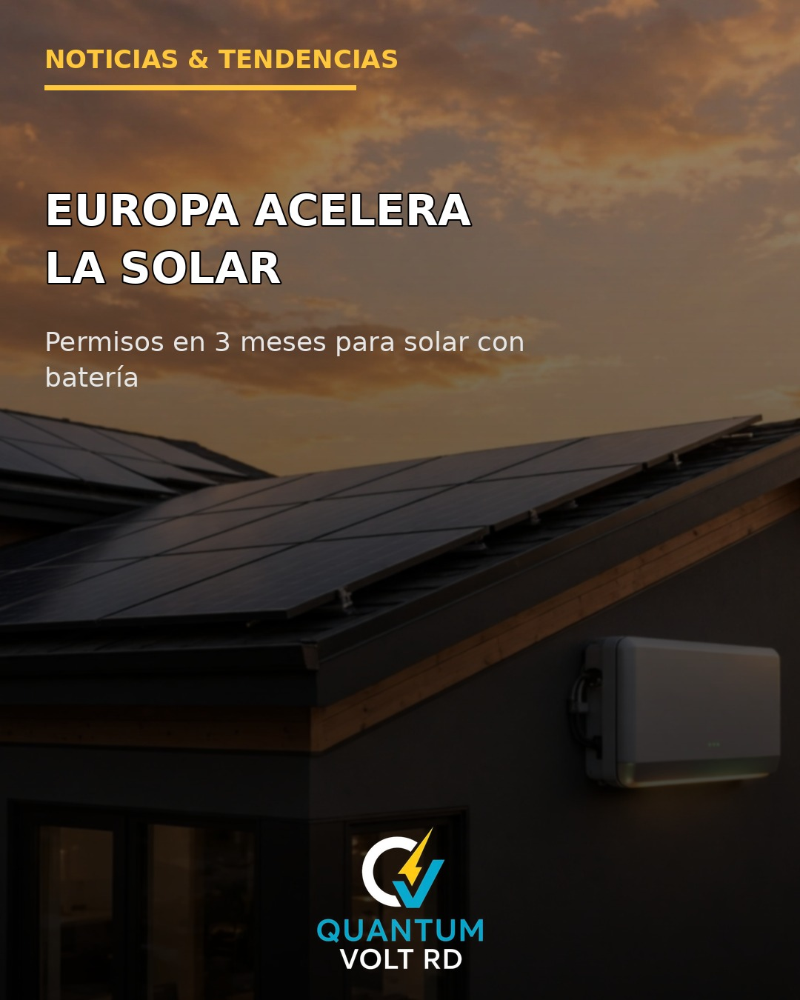

Noticia · 18 de noviembre de 2026
Europa le quita el freno a la solar con batería: permisos en 3 meses
18 de noviembre de 2026 · Energía solar · Baterías

La Unión Europea acordó acelerar los permisos para las renovables, las redes eléctricas y el almacenamiento: las instalaciones solares con su sistema de baterías asociado deberán autorizarse en un máximo de 3 meses, y las baterías independientes y los puntos de recarga en 6 meses. Las solicitudes de conexión a la red también deberán resolverse en 3 meses, ampliables a 6 en casos justificados.
El problema que ataca: la espera
Hoy un permiso para renovables en Europa puede demorar hasta 9 años, y más de la mitad de los 10 años que tarda una red de transporte nueva se va en autorizaciones. El acuerdo también exime de permiso a los equipos solares y baterías pequeños, de hasta 200 kW, y crea portales digitales únicos para presentar y gestionar las solicitudes en un mismo lugar. Además, las renovables y las infraestructuras eléctricas podrán declararse de «interés público superior», lo que facilita su aprobación.
Todavía no es ley: qué falta
Hay que decirlo claro: es un acuerdo provisional, cerrado en la madrugada de hoy entre el Consejo y el Parlamento Europeo. Todavía falta el visto bueno final de ambas instituciones y luego 18 meses para que cada país lo incorpore a su ley. Pero la dirección es clara: el mundo está quitando trabas a la solar con batería, porque el cuello de botella ya no es el panel ni la batería, es el permiso.
Qué significa para tu casa en RD
En República Dominicana no hay que esperar a que cambie ninguna ley: panel + batería ya te dan luz propia en la noche y en el apagón. Es exactamente lo que instalamos: en Quantum Volt RD te ponemos tu sistema solar con baterías, dimensionado para tu casa o negocio, para que un apagón no te deje sin servicio.
Cotiza tu sistema solar con baterías por WhatsApp: 829-778-9089Fuentes
- Energías Renovables, 18 de noviembre de 2026: La UE acuerda reducir los plazos para autorizar proyectos de renovables y redes eléctricas
← Volver a la página principal de Quantum Volt RD · Ver todas las noticias →